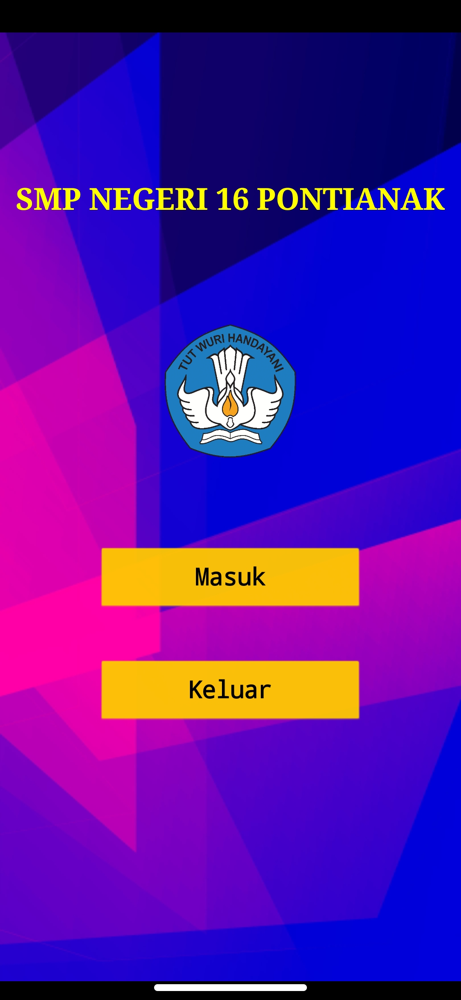
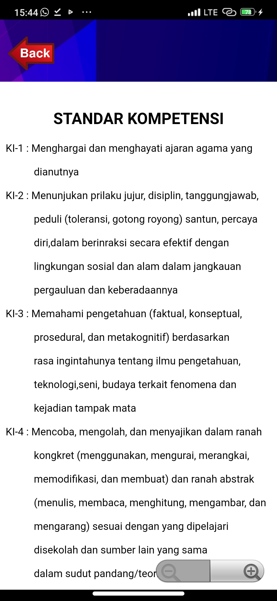
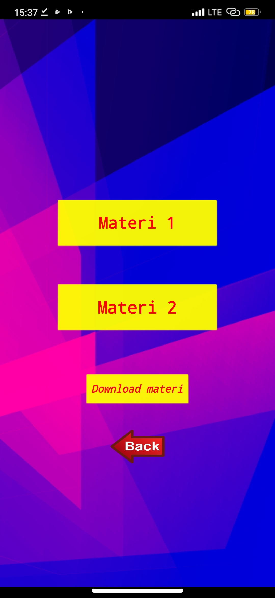
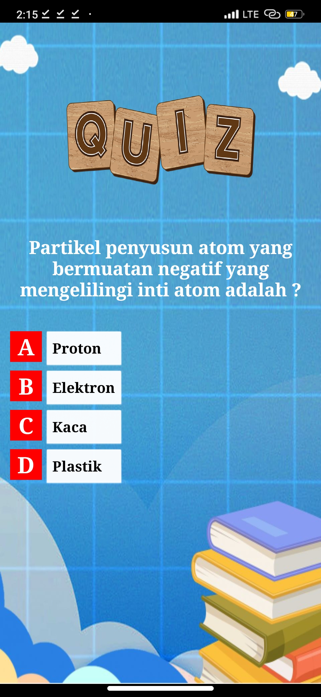
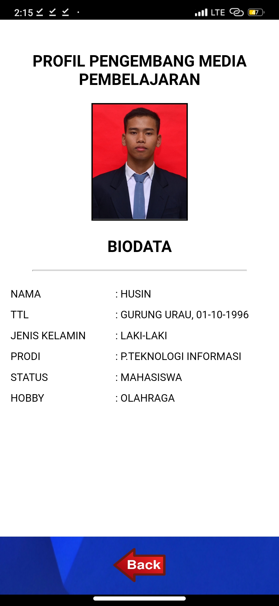

1. Tampilan awal yaitu terdiri dari 2 buah tombol Button yaitu Masuk dan Keluar. dengan dua tombol pilihan anda bisa memilih button masuk untuk melajutkan pada tamilan Utama, dan button keluar untuk keluar dari media atau aplikasi

2. Pada tampilan menu utama yaitu terdapat 6 buah tombol button yaitu, Standar Kopetensi, Materi, Video, Quiz, Profil, dan Petunjuk. dan terdapat tombol button kembali yang berada dibawah, jika ingin masuk silahkan klik bagian button atau gambar. sedangkan button back yaitu berfungsi untuk kembali pada menu utama.
3. Tampilan Standar Kopetensi. pada tampilan ini terdapat satu buah tombol button yang berfungsi untuk kembali pada tampilan menu utama

4. Tampilan Pilihan Materi. pada tampilan pilihan materi ini terdapat empat tombol button materi 1, materi 2, button download materi serta button kembali. button materi1 dan 2 untuk masuk pada bagian materi, button download materi untuk mendownload materi sedangkan button Back yaitu untuk kembali pada tampilan pilihan materiali pada tampilan menu utama

5. Tampilan Materi 1. pada tampilan pilihan materi 1 ini terdapat button kembali yaitu berfungsi untuk kembali pada menu pilihan materi

6. Tampilan Materi 2. pada tampilan pilihan materi 2 ini terdapat button kembali yaitu berfungsi untuk kembali pada menu pilihan materi

8. Tampilan Quiz. pada tampilan Quiz ini terdapat soal beserta pilihan jawaban, dengan cara mengeklik pada pilihan jawaban tepatnya klik pada bagian tulisan

9. Tampilan Akhir Quiz. pada tampilan khir Quiz ini terdapat skor yang diperoleh dan terdapat satu button kembali yaitu berfungsi untuk kembali pada tampilan menu utama.

10. Profil. pada tampilan profil yaitu terdapat sebuah button kembali yaitu berfungsi untuk kembali pada tampilan menu utama.
